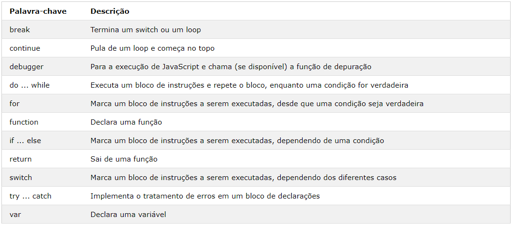

Declarações em JavaScript
- Valores
- Operadores
- Expressões
- palavra-chave
- comentário
O uso do ponto e vírgula é opcional, mas altamente recomendado
Porém, para declarações em linha, elas são necessárias
Espaço em branco ignorado ou quebras de linha
Pode utilizar para deixar o código mais legível
coloque espaços ao redor dos operadores (= + - * /)
Blocos de códigos em funções
O objetivo dos blocos de código é definir instruções a serem executadas juntas.
palavra-chave
